Profile, Account & Settings
/profile — the signed-in account hub (identity, Credits/MVs/Songs stats, Edit Profile, Muse Pro, Language, History, Send Feedback, Settings) — and /settings — legal links, Unsubscribe, Delete Account and the app’s only Sign Out control.
| Platform | YouCam Muse Web — captured at 1403×697 (desktop only, D8) |
| Audience | QA |
| Scope | /profile (identity, stats, Edit Profile, Muse Pro, Language, Send Feedback) and /settings (Terms/Privacy, Unsubscribe in both its variants, Delete Account, Sign Out row) plus the logged-out gate on /settings. |
| Out of scope | SubscribeModal and /profile/credits (S5, on hold for designer IAP artwork — named as destinations, not toured); the community grid at /creator?self=1 (area 04); the Sign Out FLOW once triggered (S6’s P6 owns it — this spec captures the row only). |
| Source | specs/areas/06-profile-account.md (§§1-10, AC-PROF-01..17) and the running app |
↓ Flow Diagram — full user journey (click to expand)
Mermaid source
flowchart TD
Profile["/profile (auth-gated)"] --> Tiles["Credits/MVs/Songs tiles -- name destinations only"]
Profile --> Edit{Edit Profile?}
Edit -->|Save| EditDone["Name/avatar updated in-memory, toast"]
Profile --> Pro{Muse Pro tap?}
Pro -->|not subscribed| Iap["SubscribeModal (S5, not captured)"]
Pro -->|subscribed| Credits["/profile/credits (S5, not toured)"]
Profile --> Lang{Change Language?}
Lang -->|pick a locale| LangDone["URL + Language subtitle update; rest stays English"]
Profile --> FB["Send Feedback"]
FB --> FBForm["FORM: Type -> Description -> Attachment -> Email"]
FBForm -->|valid + Send| FBSend["SUBMITTING"]
FBSend -->|resolved| FBOk["Feedback Sent + Done, no toast"]
FBSend -.->|rejected, not reachable| FBErr["inline error, draft preserved (Q-02)"]
Profile --> Settings["/settings"]
Settings --> Legal["Terms / Privacy -> real links, new tab"]
Settings --> Unsub{Unsubscribe?}
Unsub -->|subOnApp off, default| UnsubToast["Confirm -> demo toast"]
Unsub -->|subOnApp on, demo panel| UnsubPhone["Manage-on-your-phone dialog (D11)"]
Settings --> Del{Delete Account?}
Del -->|confirm| DelDone["Demo toast -> Home, nothing deleted"]
Settings --> Out["Sign Out row (S6 owns the flow)"]
Gate["/settings, logged out"] -.->|AuthGuard| SignIn["Sign-in modal; dismiss -> Home"]
| ID | Path | Entry point | Steps | Outcome |
|---|---|---|---|---|
| P1 | Profile hub | /profile (auth-gated) | 2 steps | The hub renders; each tile/row names its destination |
| P2 | Edit profile | Edit control on the identity block | 4 steps | Name/avatar update in the hub and the sidebar footer; no toast on the destination, a toast on this screen |
| P3 | Muse Pro & Language | Muse Pro / Language rows | 4 steps | Muse Pro opens SubscribeModal or /profile/credits (neither toured); Language switches the active locale |
| P4 | Settings | Settings row on /profile | 6 steps | Each row completes its own demo-only action; Sign Out routes to S6’s own flow |
| P5 | Send Feedback | Send Feedback row on /profile | 9 steps | `MuseApi.submitFeedback` resolves to a “Feedback Sent” confirmation, or (unreachable in this build) rejects to an inline error |
| P6 | Logged-out gate | /settings, no session | 1 steps | The sign-in modal opens; the route renders nothing behind it |
The identity block (avatar · name · email · Edit — no plan badge, AC-PROF-01), the three stat tiles and where each navigates, and the five-row list.
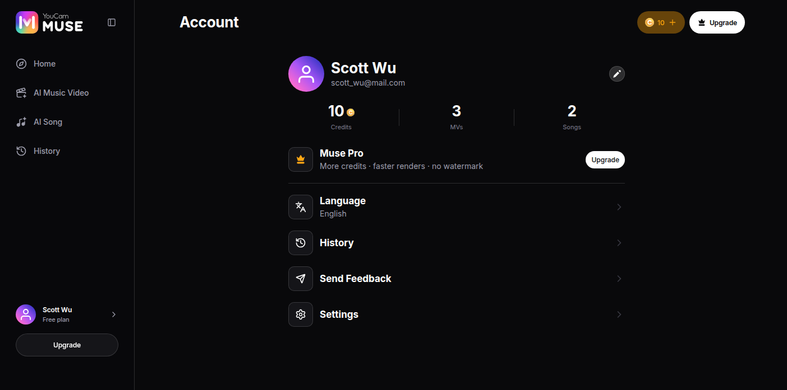
- 1Edit
- 2Credits
- 3MVs
- 4Songs
- Route title: “Account”
- No plan/PRO badge next to the name.AC-PROF-01, corrected 2026-08-19 — DP’s identity block is avatar + name + email + Edit, with no class for a badge. Subscription state surfaces only in the Muse Pro row (P3) and the sidebar footer, not here.
- Credits tile → /profile/credits (S5, on hold — named as the destination, not toured).
- MVs tile → /creator?self=1&tab=mv; Songs tile → /creator?self=1&tab=songs (area 04, not toured here).

- 1Muse Pro
- 2Language
- 3History
- 4Send Feedback
- 5Settings
- Muse Pro and Language are walked in P3.
- History navigates to /history (area 05, not toured).
- Send Feedback opens the form walked in P5.
- Settings navigates to /settings, walked in P4.
- Sign Out is NOT one of these five rows.AC-PROF-06 — since 2026-08-27 (S6 Q-01) it lives only in Settings (P4).
The inline Edit-Profile modal: a real photo upload with a circular crop, an editable name, a read-only email, and Save committing both in-memory.
- P2-S1 Taps the Edit control.
- P2-S2 Clicks “Change Photo” and picks an image file.
- P2-S3 Confirms the crop, then edits Name.
- P2-S4 Clicks Save.
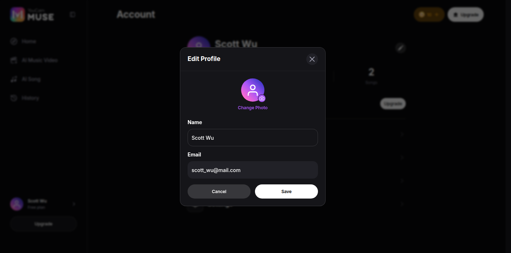
- 1Change Photo
- Title: “Edit Profile”
- Email is read-only here.Unlike Send Feedback’s Email field (P5), which is editable — a deliberate difference, not an inconsistency (area spec §10 decision 7).
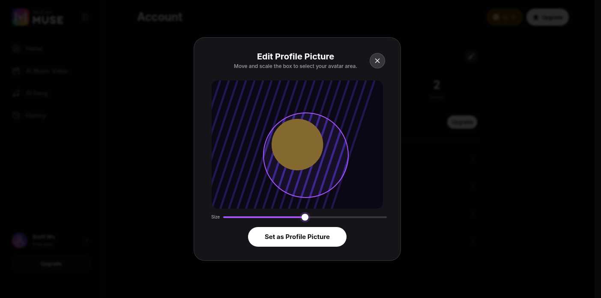
- 1Set as Profile Picture
- Title: “Edit Profile Picture”
- Subtitle: “Move and scale the box to select your avatar area.”
- CTA: “Set as Profile Picture”
- Slider label: “Size”
- This is a real file picker, not a sample cycle.It used to step through a fixed `AVATAR_SAMPLES` list. Since 2026-09-02 it is a genuine `<input type="file" accept="image/*">`, sharing `/mv/room`’s Select-a-Face dialog (`FacePickerModal variant="avatar"`) rather than a second crop implementation — same drag / scale / canvas pipeline, circular frame, avatar copy.
- Rejected before the dialog opens: a non-image, or a file over 10 MB.Both surface as a toast on the Edit Profile modal and the crop dialog never appears. Note this is the AVATAR cap — Send Feedback’s attachment budget is a separate 5 MB cumulative rule (P5-S6).
- The selection is a CIRCLE on any source aspect ratio.Shot against a 4:3 source deliberately: a square source hides the crop-frame aspect bug that shipped 2026-08-14 and was fixed 2026-09-02 (the frame drew two axes of `crop.size`% while `cropToDataUrl` always cut a square, so the framed region was never the saved region). A square test image cannot show that, and did not.
- Nothing is uploaded anywhere.The crop result is a data URL held in `avatarDraft`. A backend has to replace it with an upload and a stored URL — `TBD-GL-04`.
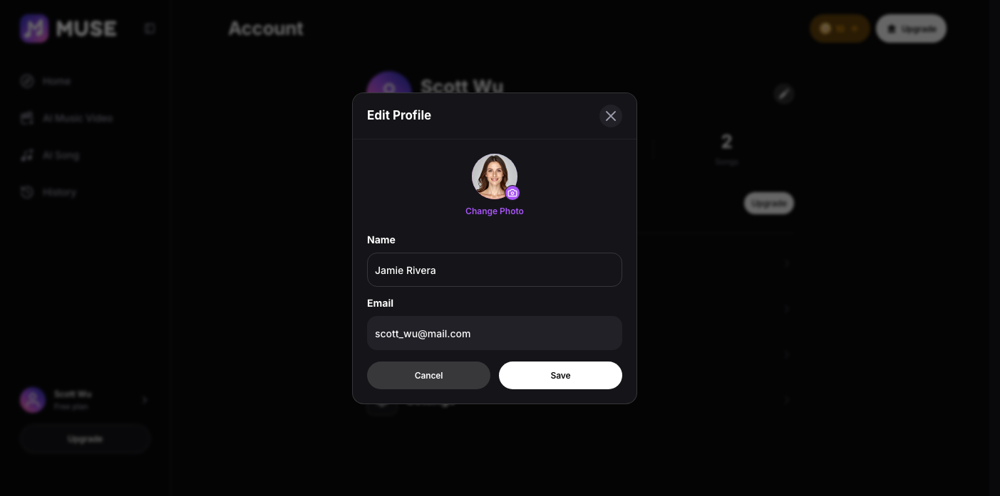
- 1Save
- Confirming the crop does NOT commit it.It only fills the draft — Save commits, Cancel discards, exactly like the name field. There is no second commit path to reason about.
- Name is capped at 30 characters (maxLength).
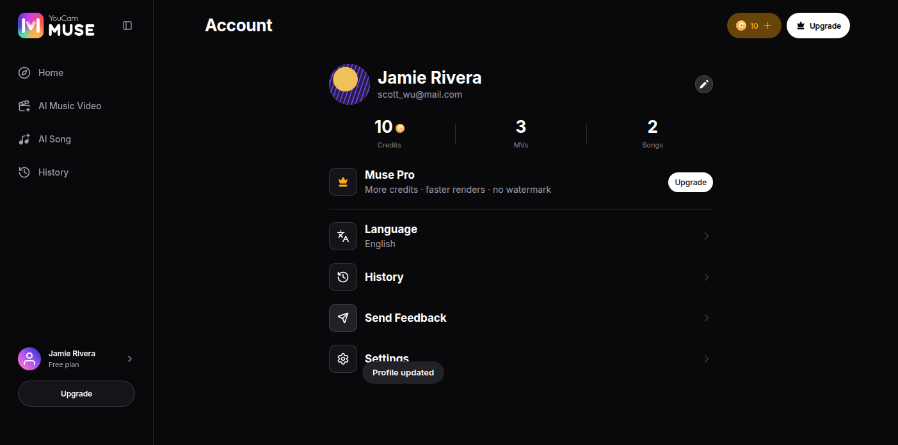
- Toast: “Profile updated”
- In-memory only.A reload resets both to their seed values — PROF-E3, `TBD-GL-04`.
Muse Pro in its two REAL states (not subscribed / subscribed) — the IAP boundary stops at the click target, no SubscribeModal capture — and Language’s 9-locale picker.
- P3-S1 Views the Muse Pro row while not subscribed.
- P3-S2 Views the same row once subscribed.
- P3-S3 Taps the Language row.
- P3-S4 Picks a different locale (German, in this capture).
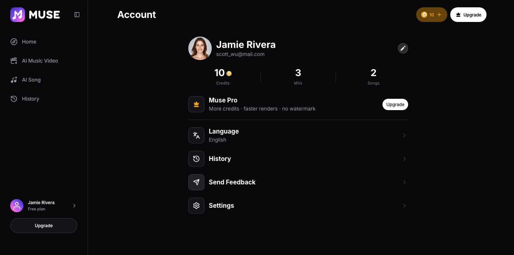
- 1Upgrade
- Tapping the row opens SubscribeModal — not captured.S5 (credits-iap) is deliberately on hold until the designer delivers the IAP artwork; any capture of that modal would carry a known expiry date (PLAN.md, S7 scope note 1). AC-PROF-04.
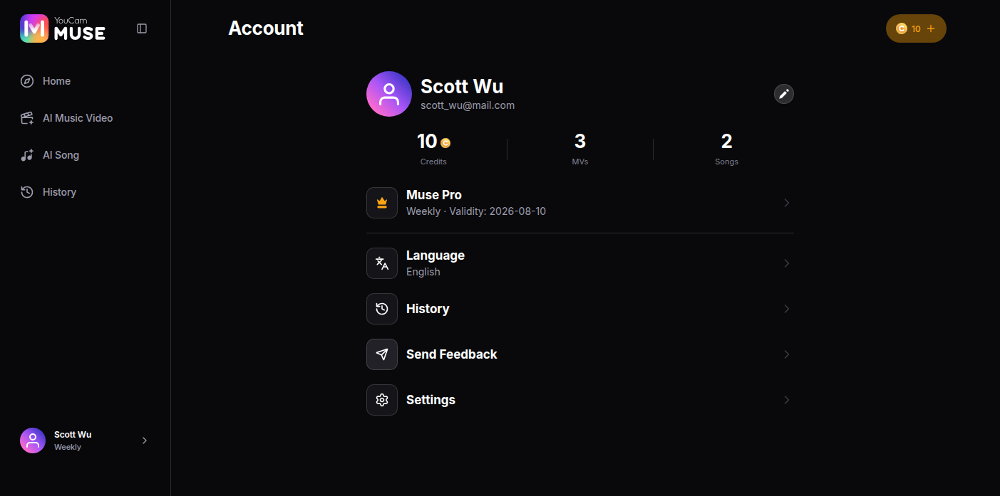
- 1Muse Pro row
- Subtitle: “Weekly · Validity: 2026-08-10” (plan name varies; the date is a hardcoded placeholder — TBD-PROF-05)
- Tapping the row now navigates to /profile/credits instead — not toured.S5’s own route; named as the destination only, same boundary as the stat tile (P1-S1). AC-PROF-04.
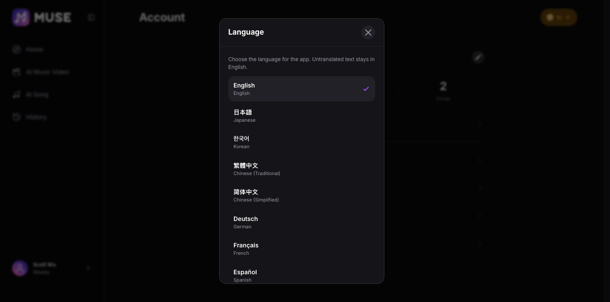
- setLocale(code) writes a `NEXT_LOCALE` cookie and navigates to the same route under the new locale prefix.
- 1Language row
- Every OTHER string on this screen stays English.The 8 non-English dictionaries are intentionally empty (`Partial<Dictionary>`); `useT()` falls back to English per-key when a translation is missing (AGENTS.md). The Language row’s subtitle is the one exception — it reads from a separate, always-populated `LOCALE_NAMES` map, not from `t()`. AC-PROF-05.
The row order (Terms of Use, Privacy Policy, Unsubscribe, Delete Account, Sign Out), the real legal links, Unsubscribe in BOTH its variants, and the destructive Delete confirm.
- P4-S1 Views /settings.
- P4-S2 Taps Unsubscribe.
- P4-S3 Confirms Unsubscribe.
- P4-S4 Taps Delete Account.
- P4-S5 Confirms Delete.
- P4-S6 With
?demo=1on the URL, expands the DEMO panel, switches on “Subscribed on a phone (App Store / Google Play)”, then taps Unsubscribe again.
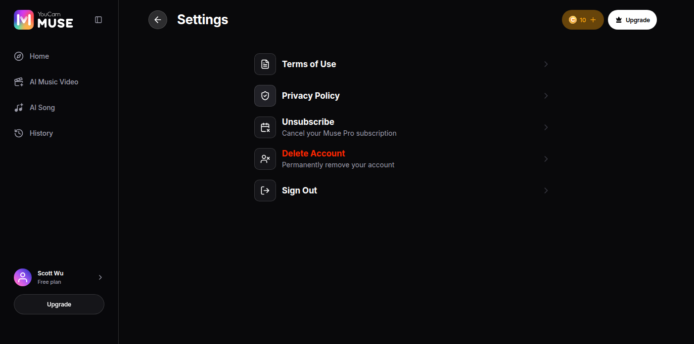
- 1Terms of Use
- 2Privacy Policy
- 3Unsubscribe
- 4Delete Account
- 5Sign Out
- Terms of Use / Privacy Policy open the REAL legal pages in a new tab.`lib/legal.ts`’s `TERMS_URL`/`PRIVACY_URL` — the same pair the sign-in modal uses (AUTH-03). AC-PROF-09.
- Sign Out is a row here only — its flow is walked in shell-auth (S6), not here.S6’s P6 owns sign-out end to end (both entry points, the reload edge case). This is the app’s ONLY Sign Out control since 2026-08-27 (S6 Q-01). AC-PROF-06.
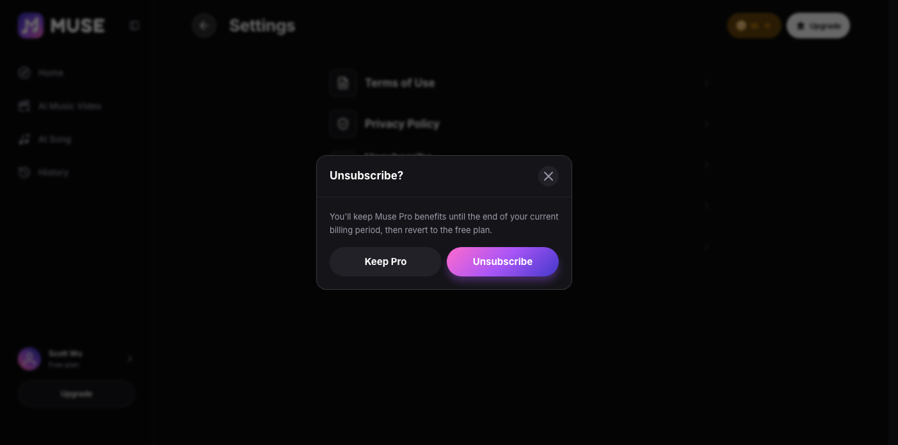
- 1Unsubscribe
- Title: “Unsubscribe?”
- Buttons: “Keep Pro”, “Unsubscribe”
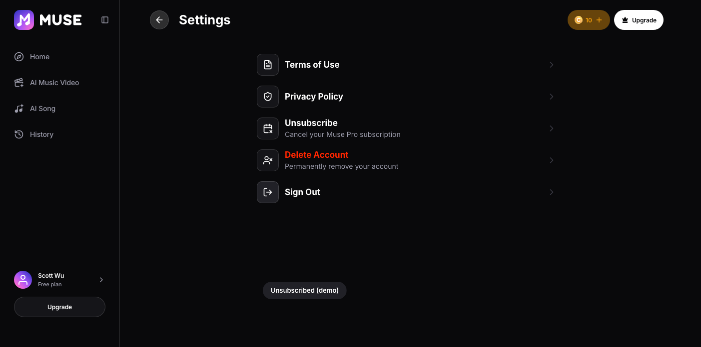
- Toast: “Unsubscribed (demo)”
- Placeholder behaviour, not a real cancellation.AC-PROF-07, PROF-E4 — pending `TBD-PROF-04`. This is the DEFAULT branch only; P4-S6 below is the other one.
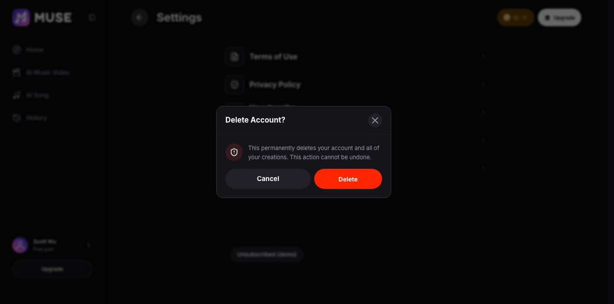
- 1Delete
- Title: “Delete Account?”
- Body: this permanently deletes the account and all creations; cannot be undone.
- Buttons: “Cancel”, “Delete”
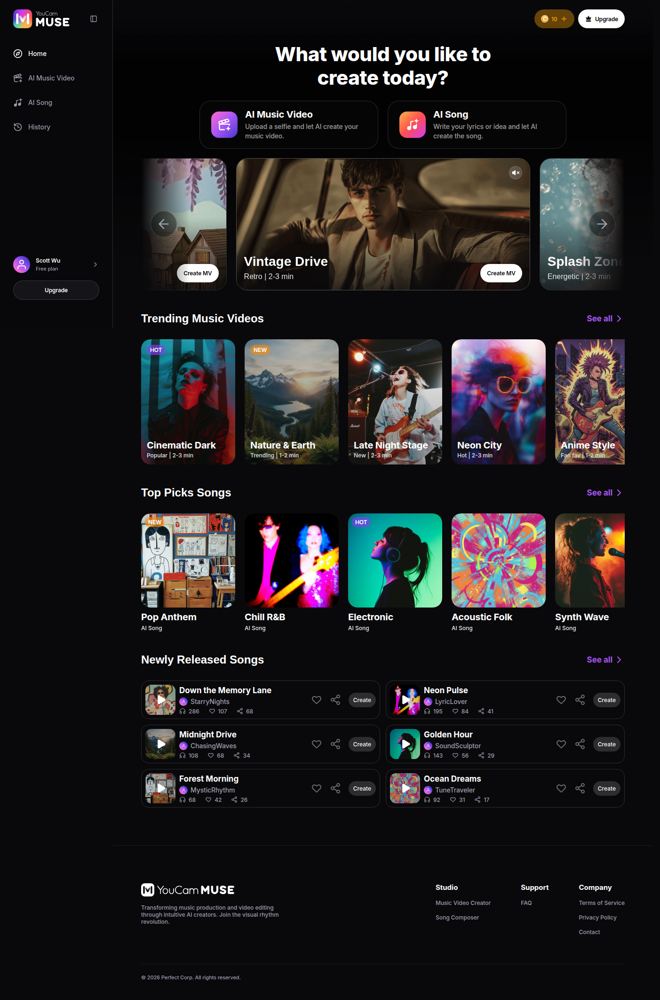
- Toast: “Account deleted (demo)”
- Placeholder behaviour, not a real deletion.AC-PROF-07 — pending `TBD-PROF-04`. No `signOut()` call, so the (fake) session survives this — confirmed live: the very next step re-enters as the same account.
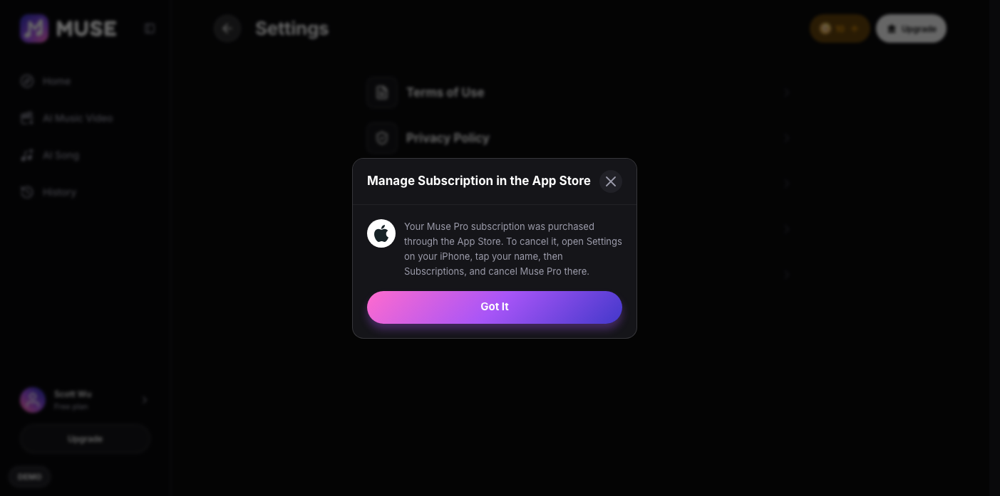
- 1Got It
?demo=1 on the URL, expands the DEMO panel, switches on “Subscribed on a phone (App Store / Google Play)”, then taps Unsubscribe again.- Title: “Manage Subscription in the App Store” or “Manage Subscription in Google Play”, depending on the panel’s iOS/Android picker
- Single control: “Got It”
- Neither AC-PROF-07 nor §3 documented this branch before this capture.D11 correction — see `specs/areas/06-profile-account.md`’s §3 note and decision D-02 below.
- No confirm, no toast — “Got It” just closes the dialog.
- Nothing here could be cancelled from the web even in production.
- No Figma exists for this dialog.Its copy is this session’s own (`SettingsView.tsx`’s own header comment) — flagged as `open_questions` Q-01 for a design review.
The 4-field support-ticket form (Type → Description → Attachment → Email, no Subject), its Send-gating, the attachment budget, success, and the two states with no screenshot: keyboard-only Type control and the submit-failure path.
- P5-S1 Taps Send Feedback.
- P5-S2 Clicks the Type trigger.
- P5-S3 Operates the same control by keyboard alone: ↓/↑ move, Home/End jump, Enter/Space select, Esc closes.
- P5-S4 Types a Description with a Type already chosen and a valid Email present.
- P5-S5 Clicks “Add file” and picks one small file.
- P5-S6 Picks a second file whose size ALONE crosses the 5 MB cumulative budget.
- P5-S7 Clicks Send.
- P5-S8 Clicks Done, then reopens Send Feedback.
- P5-E9 Submits with a valid form and the request fails (network / 500 / oversized multipart).
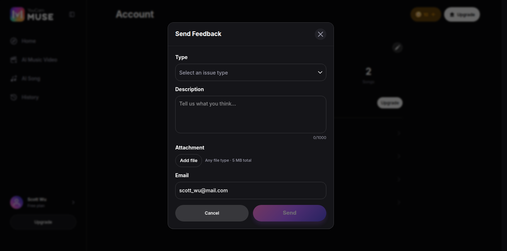
- 1Type
- Exactly four fields, in order: Type (placeholder “Select an issue type”), Description (placeholder “Tell us what you think…”), Attachment, Email.
- Email is prefilled from the account.
- There is no Subject field.AC-PROF-10 asserts the ABSENCE — a returning Subject would silently re-open `TBD-PROF-07` (whether Muse posts to a different endpoint than YCO’s CSB, and whether that endpoint wants a `title`).
- Send is disabled until Type and Description are non-empty and Email is well-formed (AC-PROF-11).
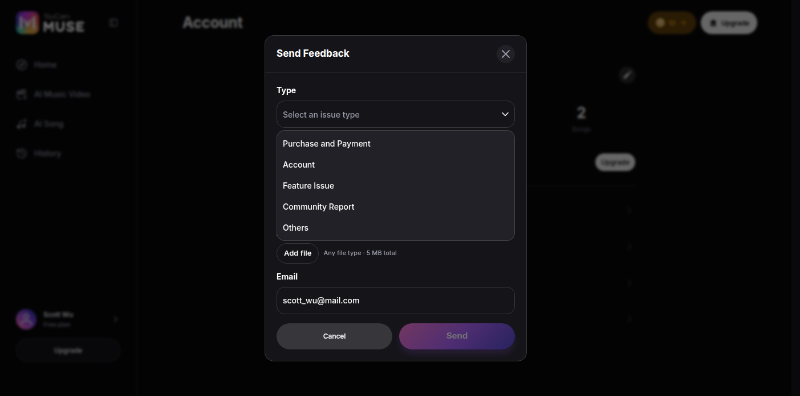
- 1Purchase and Payment
- Options, in order: Purchase and Payment, Account, Feature Issue, Community Report, Others
- Community Report has no CSB id yet.`questionTypeId: null` until `TBD-PROF-06` supplies one — the label ships regardless, per the product owner.
- Behaviour a screenshot cannot carry, per PLAN.md’s S7 scope.AC-PROF-16 — `role="listbox"`/`role="option"` semantics, `aria-activedescendant` tracking the highlighted option, and Esc stopping at the combobox instead of closing the whole dialog (`FeedbackDialog.tsx`’s own `onTypeKeyDown`).
- Must pass axe at 375 and 1440 (AC-PROF-16).
- The 1440 half is this build’s own D8 desktop capture.375 is `e2e/a11y.spec.ts`’s job, not re-run here.
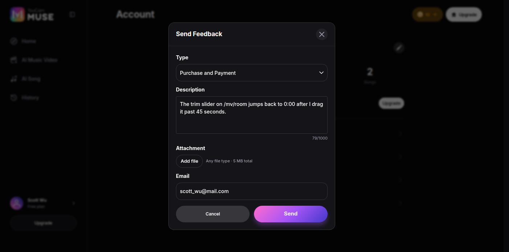
- 1Send
- Description is capped at 1000 characters with a live counter.AC-PROF-11.
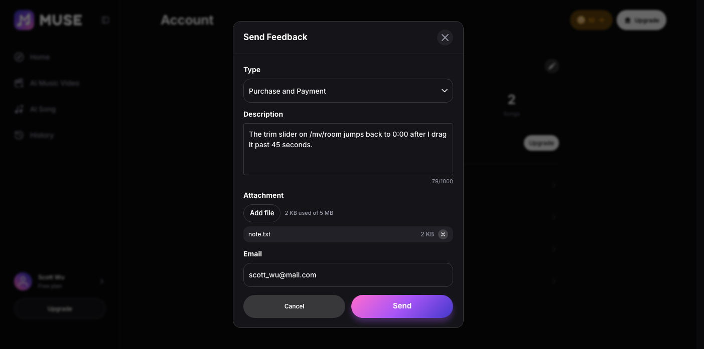
- 1Attached file
- Any file type is accepted; the budget is 5 MB, cumulative across every picked file.
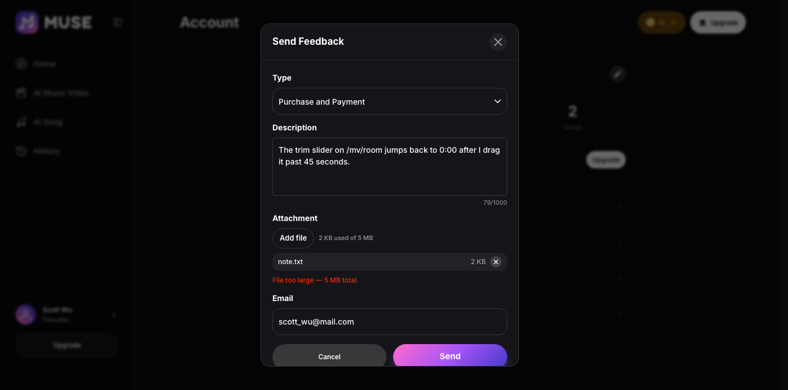
- 1Refusal message
- Message: “File too large — 5 MB total.”
- Refused whole, never truncated or partially added.PROF-E5, AC-PROF-15 — a silent partial add would read as success.
- One message inside the form, never a toast.CS spec AC-22 (as adapted — the 5 MB figure itself is Muse’s own, not CS’s 10 MB; see area spec §3.1).
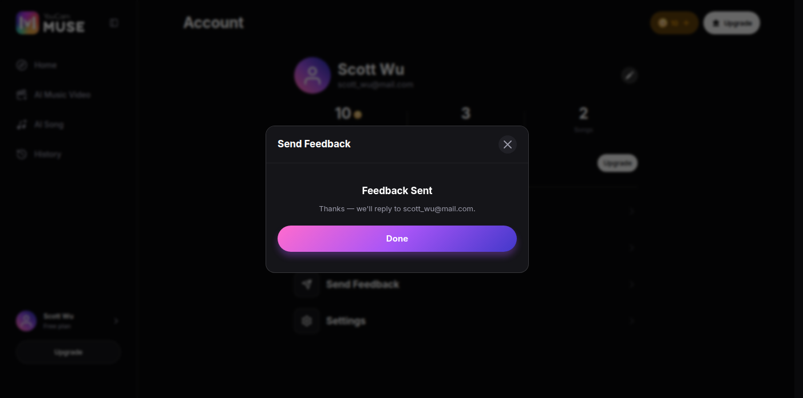
- 1Done
- Title: “Feedback Sent”
- Body: “Thanks — we’ll reply to <email>.”
- Control: “Done”
- No toast anywhere in this flow.AC-PROF-13 — the in-dialog confirmation replaces the toast the old one-textarea modal used to show.
- Unmounting IS the reset.The dialog is mounted conditionally (`{fbOpen && <FeedbackDialog/>}`) rather than hidden, so there is no stale-draft effect to write — Email is re-prefilled from the account, every other field is empty (PROF-P5-S6).
- Error line: “Couldn’t send. Please try again.”
- NOT CAPTURABLE in this build — documented from the area spec, not photographed.PROF-E6, AC-PROF-14. `FeedbackDialog.tsx` reads no demo flag, and the mock only rejects on an attachment overage the UI’s own pick-refusal (P5-S6) already prevents from ever reaching Send. See `open_questions` Q-02.
- Nothing is discarded — the retry path is Send again, no re-entry of any field.
Direct-navigating /settings while logged out.
- P6-S1 Navigates directly to /settings with no active session.
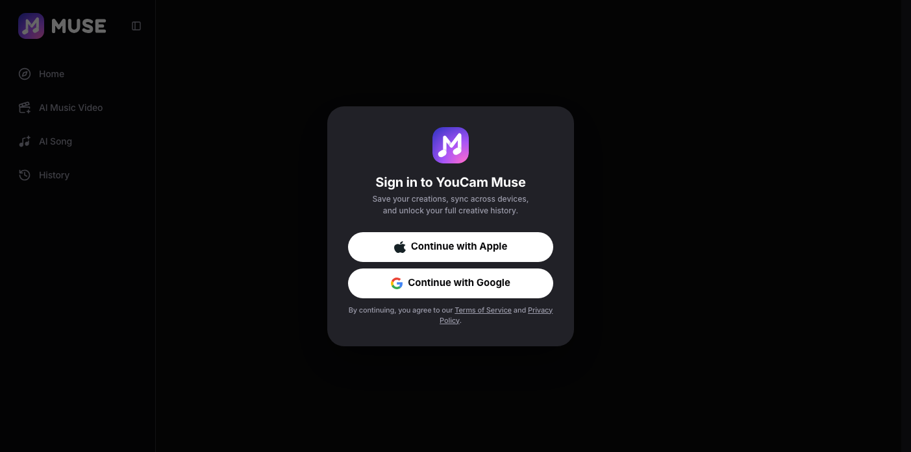
- Dialog title: “Sign in to YouCam Muse”
- Dismissing sends the user Home, unlike a gated NAV click elsewhere in the app.AC-PROF-17 — `AuthGuard`’s own `requireLogin(undefined, () => router.replace(home))`. S6’s P4 owns this contrast (gated route entry vs. gated nav dismiss) in full; the gate on /settings is shown here and walked no further.
What `FeedbackDialog.tsx` sends `MuseApi.submitFeedback` — the field names ARE the CSB wire params (area spec §3.1), so there is no mapping layer between this shape and the real endpoint.
{
"email": "scott_wu@mail.com",
"questionTypeId": 313,
"q": "The trim slider on /mv/room jumps back to 0:00 after I drag it past 45 seconds.",
"language": "enu",
"prodVerId": null,
"attachment": []
}emailstringquestionTypeIdnumber | nullqstringlanguagestringprodVerIdnumber | nullattachmentFile[]There is no `title` key at all — not `null`, absent. Removed 2026-08-27 with the Subject field (a declared C2 contract change); see `TBD-PROF-07` for whether the real endpoint needs one back.
| What the user sees | Comes from |
|---|---|
| Type trigger label | questionTypeId (via the 5-option label → id map) |
| Description textarea | q |
| Email field | email |
| Attachment chips | attachment[] |
The contract of each screen state. The flow diagram shows the transitions; this shows what each state must render.
| State | Entry condition | Visible / enabled | Transitions | Exit |
|---|---|---|---|---|
| Muse Pro row | Not subscribed | Shows an “Upgrade” pill | Tap → SubscribeModal (S5, not captured) | N/A |
| Muse Pro row | Subscribed | Shows plan name + hardcoded validity, no pill | Tap → /profile/credits (S5, not toured) | N/A |
| Settings · Unsubscribe | Demo `subOnApp` flag OFF (default) | Confirm dialog (“Keep Pro” / “Unsubscribe”) | Confirm → demo toast, `subscribed` unchanged | Cancel (Keep Pro) or the toast fading |
| Settings · Unsubscribe | Demo `subOnApp` flag ON | “Manage Subscription” dialog, single “Got It” | Got It → just closes, nothing changes | Got It |
| Send Feedback · Send control | Type or Description empty, or Email malformed | Disabled, no field-level error shown | Enables once all three conditions clear | N/A |
| Send Feedback · Send control | Type + Description non-empty AND Email well-formed | Enabled | Tap → SUBMITTING (fields read-only) | Resolve → SUCCESS; reject → ERROR (not reachable in this build) |
Undecided, and blocking something. Everything settled lives beside the rule it governs, not here.
| ID | Question | Blocks | Owner |
|---|---|---|---|
| Q-01 | The “subscribed on a phone” Unsubscribe dialog (P4-S6) has no Figma — its copy is this build session’s own wording, not a design. | Whether the copy ships as-is or gets a design pass before this becomes a real, non-demo feature | Design / product owner |
| Q-02 | There is no way to trigger the feedback-submit failure (AC-PROF-14 / PROF-E6) today — neither organically nor via the `?demo=1` panel. Should a `feedbackFail` flag be added to `demoStore.ts`, read by `FeedbackDialog.send()`, paralleling how `jobFail` already drives MV/Song generation failures? | Ever photographing this state for QA; today it is text-only (P5-E9) | RD / product owner |
| Q-03 | What does “cost per the Credit Consume MSR” resolve to, generally? (Carried per D2 even though no step in THIS spec quotes a credit cost — Profile/Account spends nothing.) | N/A to this spec’s own steps; recorded because every spec in the programme carries this row | Product / RD (the MSR document link is still TBD) |
Every acceptance criterion in plan.md and where this spec defines it — 16 of 17 map to a step. Write the test cases in your test tool; this table is the trace back to the spec.
| Criterion | What it asserts | Specified in |
|---|---|---|
| AC-PROF-01 | WHEN /profile loads for a signed-in user, THE SYSTEM SHALL show avatar/name/email (no plan badge) and the Credits/MVs/Songs tiles and row list. | P1-S1 |
| AC-PROF-02 | WHEN a stat tile is tapped, THE SYSTEM SHALL navigate to /profile/credits (Credits) or /creator?self=1&tab=mv|songs (MVs/Songs). | P1-S1 |
| AC-PROF-03 | WHEN Edit-Profile is saved, THE SYSTEM SHALL commit name/avatar via updateProfile and reflect them in the shell (in-memory). | P2-S1 · P2-S2 · P2-S3 · P2-S4 |
| AC-PROF-04 | WHEN the Muse Pro row is tapped, THE SYSTEM SHALL open SubscribeModal (not subscribed) or Credits detail (subscribed). | P3-S1 · P3-S2 |
| AC-PROF-05 | WHEN Language is changed, THE SYSTEM SHALL switch locale via setLocale and reflect it in localized surfaces. | P3-S3 · P3-S4 |
| AC-PROF-06 | WHEN Sign Out is invoked (Settings, or the flow S6 owns), THE SYSTEM SHALL clear auth and redirect Home; it SHALL NOT appear on /profile. | P1-S2 · P4-S1 |
| AC-PROF-07 | WHEN Unsubscribe or Delete Account is confirmed, THE SYSTEM SHALL show a demo toast (Delete redirects Home) without actually cancelling/deleting — EXCEPT the subOnApp branch (D11), which shows a different dialog and neither toasts nor confirms. | P4-S2 · P4-S3 · P4-S4 · P4-S5 · P4-S6 |
| AC-PROF-08 | THE SYSTEM SHALL render /profile and /settings at 320/375/768/1024/1440/1920px with no overflow. | Visual-only; the six-tier sweep is e2e/visual-baseline.spec.ts’s job. This spec’s own D8 scope captures only 1403×697 desktop. |
| AC-PROF-09 | WHEN Terms of Use / Privacy Policy is tapped, THE SYSTEM SHALL open the shared real legal URL in a new tab. | P4-S1 |
| AC-PROF-10 | WHEN Send Feedback is opened, THE SYSTEM SHALL show exactly four fields (Type, Description, Attachment, Email) with Email prefilled and Send disabled, and SHALL NOT render a Subject field. | P5-S1 |
| AC-PROF-11 | THE SYSTEM SHALL keep Send disabled until Type and Description are non-empty AND Email is well-formed, with no field-level error for the merely-incomplete case. | P5-S1 · P5-S4 |
| AC-PROF-12 | WHEN a valid form is submitted, THE SYSTEM SHALL call submitFeedback with questionTypeId/q/email/language per the mapping and SHALL NOT include title, a User ID, or an Order ID. | P5-S4 · T1 |
| AC-PROF-13 | WHEN the submit resolves, THE SYSTEM SHALL replace the form with a “Feedback Sent” confirmation and a Done control, and SHALL NOT show a toast. | P5-S7 |
| AC-PROF-14 | WHEN the submit rejects, THE SYSTEM SHALL keep the dialog open with every value/attachment intact, show one inline error, and re-enable Send. | P5-E9 |
| AC-PROF-15 | THE SYSTEM SHALL accept attachments up to 5 MB total; a pick that would exceed it SHALL add nothing and show one inline message, not a toast. | P5-S6 |
| AC-PROF-16 | THE Type control SHALL be operable by keyboard alone with listbox/option semantics and focus returning to its trigger, and SHALL pass axe at 375 and 1440. | P5-S3 |
| AC-PROF-17 | /settings SHALL be auth-gated; WHEN logged out, it SHALL open the sign-in modal. | P6-S1 |
| Error | Trigger | Message shown to user | Recovery | Where |
|---|---|---|---|---|
| Attachment pick exceeds the 5 MB total | A newly-picked file (or batch) would push the cumulative total over 5 MB | “The pick is refused WHOLE — nothing is added — one message under the field” | Remove an existing file to free budget, or pick a smaller one | P5-S6 |
| submitFeedback rejects | Network failure / 500 / oversized multipart at the real endpoint (unreachable in this mock build) | “Dialog stays open, every field and attachment intact, one inline error, Send re-enabled” | Tap Send again — no re-entry of any field | P5-E9 (documented, not captured — see open_questions Q-02) |
| Direct /settings visit while logged out | No active session | “AuthGuard renders nothing and opens the sign-in modal” | Sign in (queued nav resumes) or dismiss (→ Home) | P6-S1 |
The submitFeedback rejection is a timing/network condition this mock build cannot reproduce on demand — the “Where” column names the step that specifies it in text.
Where the prototype fakes or stubs behaviour. Build the production must do column — never the prototype behaviour.
| Area | Prototype does | Production must do |
|---|---|---|
| Edit-Profile avatar upload | Cycles a fixed 5-photo `AVATAR_SAMPLES` array — there is no file picker and no real upload. | Production needs a real image picker/uploader and storage for the result. |
| Unsubscribe / Delete Account | Both are demo toasts (or, for a store-bought subscription, a “Got It” explainer) — nothing is cancelled or deleted server-side. | Production needs the real store-cancellation deeplink (App F19) and a real, permanent account-delete endpoint (TBD-PROF-04). |
| Send Feedback endpoint | `MuseApi.submitFeedback` is a mock that validates, waits ~900ms, and always resolves with a fake ticket id — it never actually reaches CS. | RD points the same function at the real CSB (or Muse-specific, per TBD-PROF-07) endpoint; the UI needs no change (the single-swap-point contract, area spec §3.1). |
| Muse Pro validity date | Hardcoded “2026-08-10” regardless of which plan or when it was purchased. | Production needs the real subscription record’s renewal/expiry date (TBD-PROF-05). |
| ID | Question | Decision |
|---|---|---|
| D-01 | PLAN.md’s P3 scope row lists Muse Pro, Language AND Terms/Privacy together, as if all three were /profile rows — does this spec follow that grouping? | No — `SettingsView.tsx` renders Terms of Use/Privacy Policy, not `ProfileView.tsx` (confirmed against source and the area spec’s own §2 route map). Captured under P4 with the rest of /settings instead. Same six paths, same ~24 captures — this only changes which path owns which row, not what is covered. |
| D-02 | The demo panel’s `subOnApp` flag is described in PLAN.md as a third STATE of the Muse Pro row — is that what the code does? | No — `ProfileView.tsx`’s Muse Pro row branches only on the real `subscribed` boolean (P3’s two states). `subOnApp` instead gates `SettingsView.tsx`’s Unsubscribe row (`:122`), opening a completely different dialog. Captured under P4-S6. `specs/areas/06-profile-account.md` did not document this branch at all before this build — corrected in place under D11 (§3’s new ⚠ note, and AC-PROF-07’s own line). |
| D-03 | PLAN.md assumed `?demo=1` covers the feedback-submit failure the same way it covers the attachment-refusal and subscribed-on-phone states — does it? | No — verified by reading `FeedbackDialog.tsx` (no `useDemoState()`/`useDemoFlag()` calls at all) and `MockMuseApi.submitFeedback` (throws only on an attachment overage the UI already prevents from reaching Send). Recorded as `open_questions` Q-02 with a recommended fix (a `feedbackFail` flag paralleling `jobFail`), not captured, not faked. P5-E9 documents the intended behaviour from the area spec text alone. |
| D-04 | Which locale demonstrates AC-PROF-05 (P3-S4), and does its choice matter? | German — picked only because it is Latin-script, so nothing quoted from the screen risks the spec’s own CJK-in-step-text gate. The finding it surfaces (only the Language row’s subtitle changes; everything else stays English via per-key fallback) would be identical for any of the 8 non-English locales. |
| D-05 | Comments layer for this spec? | Disabled — no Firebase backend exists in this repo yet, same as S1/S3/S4/S6. |
| D-06 | Does this spec re-tour SubscribeModal, /profile/credits, or the Sign Out flow, since all three are one click away from a captured screen? | No — all three are S5’s or S6’s territory. The IAP boundary is explicitly TIGHTER than the usual neighbour rule for S5 (PLAN.md, S7 scope note 1): stop at the click target, no boundary shot of SubscribeModal at all, because S5 is on hold for designer artwork with a known expiry date. Sign Out gets the usual neighbour treatment: the row is shown (P4-S1), the flow is not. |